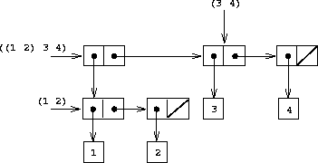
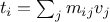
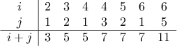
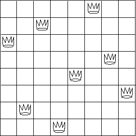
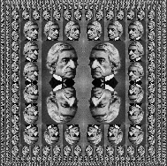
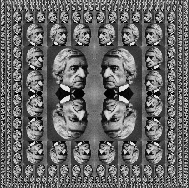
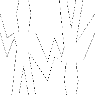

As we have seen, pairs provide a primitive “glue” that we can use to
construct compound data objects.
Figure
2.2 shows a standard way to
visualize a
pair—in this case, the pair formed by
pair(1,2).
In this representation, which is called
box-and-pointer
notation, each object is shown as a
pointer to a box. The box
for a primitive object contains a representation of the object. For
example, the box for a number contains a numeral. The box for a pair
is actually a double box, the left part containing (a pointer to) the
head of the pair and the right part containing the
tail.
We have already seen that
pair can be used to combine not
only numbers but pairs as well. (You made use of this fact, or
should have, in doing exercises
2.2
and
2.3.) As a consequence, pairs provide a universal
building block from which we can construct all sorts of data
structures. Figure
2.3
shows two ways to use pairs to combine the numbers 1, 2, 3, and 4.

|
Figure 2.
2 Box-and-pointer representation of pair(1,2).
|

|
Figure 2.
3 Two ways to combine 1, 2, 3, and 4 using pairs.
|
The ability to create pairs whose elements are pairs is the essence of
list structure’s importance as a representational tool. We refer to
this ability as the
closure property of
pair. In general,
an operation for combining data objects satisfies the closure property
if the results of combining things with that operation can themselves
be combined using the same
operation.
1
Closure is the key to power in
any means of combination because it permits us to create
hierarchical structures—structures made up of parts, which
themselves are made up of parts, and so on.
From the outset of chapter 1, we’ve made essential use of closure in
dealing with
functions, because all but the very simplest programs
rely on the fact that the elements of a combination can themselves be
combinations. In this section, we take up the consequences of closure
for compound data. We describe some conventional techniques for using
pairs to represent sequences and trees, and we exhibit a graphics
language that illustrates closure in a vivid
way.
2

|
Figure 2.
4 The sequence 1, 2, 3, 4 represented as a chain of pairs.
|
One of the useful structures we can build with pairs is a
sequence—an ordered collection of data objects. There are, of
course, many ways to represent sequences in terms of pairs. One
particularly straightforward representation is illustrated in
figure
2.4, where the sequence 1, 2, 3, 4 is
represented as a chain of pairs. The
head of each pair is the
corresponding item in the chain, and the
tail of the pair is
the next pair in the chain. The
tail of the final pair
signals the end of the sequence by pointing to a distinguished
value that is not a pair,
represented in box-and-pointer diagrams as a diagonal line
and in programs as the value of
JavaScript’s value
[].
The entire sequence is constructed by nested
pair operations:
pair(1,
pair(2,
pair(3,
pair(4,[]))))
Such a sequence of pairs, formed by nested
paires, is called a
list, and JavaScript provides a
primitive called
list to help in constructing
lists.
3
The above sequence could be produced by list(1,2,3,4). In
general,
is equivalent to
Our implementation of
pair employs
JavaScript arrays. Thus,
pair(1,2)
is printed as
[1,2], which is an
array with the elements 1 and 2. The data object in
figure
2.4
is printed as
[1,[2,[3,[4,[]]]]]:
var one_through_four = list(1,2,3,4);
We can think of
head as selecting the first item in the list, and
of
tail as selecting the sublist consisting of all but the first
item. Nested applications of
head and
tail can be used to
extract the second, third, and subsequent items in the
list.
The constructor
pair makes a list like the original one,
but with an additional item at the beginning.
head(one_through_four)
tail(one_through_four)
head(tail(one_through_four))
pair(10,one_through_four)
pair(5,one_through_four)
The value [],
used to terminate the chain of pairs, can be
thought of as a sequence of no elements, the
empty list.
List operations
The use of pairs to represent sequences of elements as lists is
accompanied by conventional programming techniques for manipulating
lists by successively
“
tailing down” the lists. For example,
the
function
list_ref takes as arguments a list and a number
and returns the
th item of the list. It is customary to
number the elements of the list beginning with 0. The method for
computing
list_ref is the following:
- For , list_ref should return the head of the list.
n
- Otherwise, list_ref should return the st item of the
tail of the list.
function list_ref(items,n) {
if (n === 0)
return head(items);
else return list_ref(tail(items),n - 1);
}
Often we
tail down the whole list. To aid in this, our JavaScript environment includes
a predicate
is_empty_list, which tests whether its argument is
the empty list. The
function
length, which
returns the number of items in a list, illustrates this typical
pattern of use:
function length(items) {
if (is_empty_list(items))
return 0;
else return 1 + length(tail(items));
}
The
length
function
implements a simple recursive plan. The
reduction step is:
- The length of any list is 1 plus the length of the
tail of the list.
This is applied successively until we reach the base case:
- The length of the empty list is 0.
We could also compute
length in an iterative style:
function length(items) {
function length_iter(a,count) {
if (is_empty_list(a))
return count;
else return length_iter(tail(a),count + 1);
}
return length_iter(items,0);
}
Another conventional programming technique is to
“
pair up” an
answer list while
tailing down a list, as in the
function
append, which takes two lists as arguments and combines their
elements to make a new list:
append(squares,odds)
append(odds,squares)
Append is also implemented using a recursive plan. To
append
lists
list1 and
list2, do the following:
- If list1 is the empty list, then the result is just list2.
- Otherwise, append the tail of list1 and
list2, and pair the head of list1 onto the result:
function append(list1,list2) {
if (is_empty_list(list1))
return list2;
else return pair(head(list1),append(tail(list1),list2));
}
Exercise 2.17.
Define a
function
last_pair that returns the list that contains only
the last element of a given (nonempty) list:
// last_pair to be given by student
last_pair(list(23,72,149,34))
Exercise 2.18.
Define a
function
reverse that takes a list as argument and
returns a list of the same elements in reverse order:
reverse(list(1,4,9,16,25))
Exercise 2.19.
Consider the
change-counting program of
section 1.2.2. It would be nice to be able to
easily change the currency used by the program, so that we could
compute the number of ways to change a British pound, for example. As
the program is written, the knowledge of the currency is distributed
partly into the
function
first_denomination and partly into the
function
count_change (which knows that there are five
kinds of U.S. coins). It would be nicer to be able to
supply a list of coins to be used for making change.
We want to rewrite the
function
cc so that its
second argument is a list of the values of the
coins to use rather than an integer specifying which coins to use. We
could then have lists that defined each kind of currency:
var us_coins = list(50,25,10,5,1);
var uk_coins = list(100,50,20,10,5,2,1,0.5);
We could then call
cc as follows:
cc(100,us_coins)
To do this will require changing the program
cc somewhat. It will
still have the same form, but it will access its second argument
differently, as follows:
;; first define first-denomination, except-first-denomination, and no-more
// first define first_denomination, except_first_denomination, and no_more
function cc(amount,coin_values) {
if (amount === 0) return 1;
else if (amount < 0 || no_more(coin_values)) return 0;
else return cc(amount,except_first_denomination(coin_values))
+
cc(amount - first_denomination(coin_values),
coin_values);
}
Define the
functions
first_denomination, except_first_denomination, and no_more in terms of primitive
operations on list structures. Does the order of the list coin_values affect the answer produced by cc? Why or why not?
Exercise 2.21.
The
function
list takes an arbitrary number
of arguments. In order to define such a
function, we make use of two features of JavaScript. Firstly, note that
the JavaScript interpreter tolerates additional arguments to be passed to
any function. Thus,
function f(x,y) {
return x + y;
}
f(1,2,3,4);
will return the number 3.
Secondly, the variable
arguments can be used in any
function body to refer to all actual arguments. The actual arguments
are represented by
arguments as an array, and thus
available using the notation
arguments[0],
arguments[1], etc.
For example,
function g() {
return arguments[0] + arguments[1] + arguments[2];
}
f(1,2,3,4);
will return the number 6.
Use this notation
to write a
function
same_parity that takes one or more integers
and returns a list of all the arguments that have the same even-odd
parity as the first argument. For example,
same_parity(1,2,3,4,5,6,7)
returns
[1,3,5,7], and
same_parity(2,3,4,5,6,7)
returns
[2,4,6].
Mapping over lists
One extremely useful operation is to apply some transformation
to each element in a list and generate the list of results.
For instance, the following
function
scales each number in a list by
a given factor:
function scale_list(items,factor) {
if (is_empty_list(items)) return [];
else return pair(head(items) * factor,
scale_list(tail(items),factor));
}
scale_list(list(1,2,3,4,5),10)
We can abstract this general idea and capture it as a common pattern
expressed as a higher-order
function, just as in
section
1.3. The higher-order
function
here is called
map. The function
map takes as arguments a
function
of one argument
and a list, and returns a list of the results produced by
applying the
function
to each element in the list:
7
function map(fun,items) {
if (is_empty_list(items))
return [];
else return pair(fun(head(items)),
map(fun,tail(items)));
}
map(abs,list(-10,2.5,-11.6,17))
map(function(x) { return x * x; },
list(1,2,3,4))
Now we can give a new definition of
scale_list in terms of
map:
function scale_list(items,factor) {
return map(function(x) { return x * factor; },
items);
}
Map is an important construct, not only because it captures a
common pattern, but because it establishes a higher level of
abstraction in dealing with lists. In the original definition of
scale_list, the recursive structure of the program draws attention to
the element-by-element processing of the list. Defining
scale_list in terms of
map suppresses that level of detail and
emphasizes that scaling transforms a list of elements to a list of
results. The difference between the two definitions is not that the
computer is performing a different process (it isn’t) but that we
think about the process differently. In effect,
map helps
establish an abstraction barrier that isolates the implementation of
functions
that transform lists from the details of how the
elements of the list are extracted and combined. Like the barriers
shown in figure
2.1, this abstraction gives
us the flexibility to change the low-level details of how sequences
are implemented, while preserving the conceptual framework of
operations that transform sequences to sequences.
Section
2.2.3 expands on this use
of sequences as a framework for organizing programs.
Exercise 2.22.
The
function
square_list takes a list of
numbers as argument and returns a list of the squares of those
numbers.
// square_list to be given by student
square_list(list(1,2,3,4))
Here are two different definitions of
square_list. Complete
both of them by filling in the missing expressions:
Exercise 2.23.
Louis Reasoner tries to rewrite the first
square_list
function
of
exercise
2.22 so that it evolves an iterative
process:
function square_list(items) {
function iter(things,answer) {
if (is_empty_list(things))
return answer;
else return iter(tail(things),
pair(square(head(things)),
answer));
}
return iter(items,[]);
}
Unfortunately, defining
square_list this way produces the answer
list in the reverse order of the one desired. Why?
Louis then tries to fix his bug by interchanging the arguments to
pair:
function square_list(items) {
function iter(things,answer) {
if (is_empty_list(things))
return answer;
else return iter(tail(things),
pair(answer,
square(head(things))));
}
return iter(items,[]);
}
This doesn’t work either. Explain.
Exercise 2.24.
The
function
for_each is similar to
map. It takes as
arguments a
function
and a list of elements. However, rather than
forming a list of the results,
for_each just applies the
function
to each of the elements in turn, from left to right. The values
returned by applying the
function
to the elements are not used at
all—
for_each is used with
functions
that perform an action,
such as printing. For example,
for_each(function(x) { newline(); display(x); },
list(57,321,88));
The value returned by the call to
for_each (not illustrated above)
can be something arbitrary, such as true. Give an
implementation of
for_each.
The representation of sequences in terms of lists generalizes
naturally to represent sequences whose elements may
themselves be sequences. For example, we can regard the object
[[1,[2,[]]],[3,[4,[]]]] constructed by
pair(list(1,2),list(3,4))
as a list of three items, the first of which is itself a list,
[1,[2,[]]]. Figure
2.5 shows
the representation of this structure in terms of pairs.
|

|
Figure 2.
5 Structure formed by pair(list(1,2),list(3,4)).
|
Another way to think of sequences whose elements are sequences is as
trees. The elements of the sequence are the branches of the
tree, and elements that are themselves sequences are subtrees.
Figure
2.6 shows the structure in
Figure
2.5 viewed as a tree.
|
|
Figure 2.
6 The list structure in Figure
2.5 viewed as a tree.
|
Recursion is a natural tool for dealing with tree structures, since
we can often reduce operations on trees to operations on their
branches, which reduce in turn to operations on the branches of the
branches, and so on, until we reach the leaves of the tree.
As an example, compare the
length
function
of
section
2.2.1 with the
count_leaves
function, which
returns the total number of leaves of a tree:
var x = [[1,[2,[]]],[3,[4,[]]]];
length(x)
count_leaves(x)
list(x,x)
length(list(x,x))
count_leaves(list(x,x))
To implement
count_leaves, recall the recursive plan for computing
length:
- The length of a list x is 1 plus the length of the
tail of x.
-
The length of the empty list is 0.
The function
count_leaves is similar. The value for the empty list is the same:
-
count_leaves of the empty list is 0.
But in the reduction step, where we strip off the
head of the
list, we must take into account that the
head may itself be a
tree whose leaves we need to count. Thus, the appropriate reduction
step is
-
count_leaves of a tree x is count_leaves of the head of x plus count_leaves of the
tail of x.
Finally, by taking
heads we reach
actual leaves, so we need another base case:
-
count_leaves of a leaf is 1.
To aid in writing recursive
functions
on trees, our JavaScript environment provides the primitive
predicate
is_pair, which tests whether its argument is a pair.
Here is the complete
function:
8
function count_leaves(x) {
if (is_empty_list(x))
return 0;
else if (! is_pair(x))
return 1;
else return count_leaves(head(x)) +
count_leaves(tail(x));
}
Exercise 2.25.
Suppose we evaluate the expression
list(1,list(2,list(3,4))).
Give the result printed by the interpreter, the corresponding
box-and-pointer structure, and the interpretation of this as a tree
(as in figure
2.).
Exercise 2.26.
Give combinations of
heads and
tails that will pick 7 from
each of the following lists:
Exercise 2.27.
Suppose we define
x and
y to be two lists:
var x = list(1,2,3);
var y = list(1,2,3);
What result is printed by the interpreter in response to evaluating
each of the following expressions:
append(x,y)
pair(x,y)
list(x,y)
Exercise 2.28.
Modify your
reverse
function
of exercise
2.18 to
produce a
deep_reverse
function
that takes a list as argument
and returns as its value the list with its elements reversed and with
all sublists deep-reversed as well. For example,
consider
var x = list(list(1,2),list(3,4));
Here,
x
should return
reverse(x)
should return
whereas
deep_reverse(x)
should return
Exercise 2.29.
Write a
function
fringe that takes as argument a tree
(represented as a list) and returns a list whose elements are all the
leaves of the tree arranged in left-to-right order. For example,
consider
var x = list(list(1,2),list(3,4))
Here,
fringe(x)
should return
and
fringe(list(x,x))
should return
Exercise 2.30.
A binary mobile consists of two branches, a left branch and a right
branch. Each branch is a rod of a certain length, from which hangs
either a weight or another binary mobile. We can represent a binary
mobile using compound data by constructing it from two branches (for
example, using
list):
function make_mobile(left,right) {
return list(left,right);
}
A branch is constructed from a
length (which must be a number)
together with a
structure, which may be either a number
(representing a simple weight) or another mobile:
function make_branch(length,structure) {
return list(length,structure);
}
-
Write the corresponding selectors left_branch and
right_branch, which return the branches of a mobile, and
branch_length and branch_structure, which return
the components of a branch.
-
Using your selectors, define a
function
total_weight
that returns the total weight of a mobile.
-
A mobile is said to be
balanced if the torque applied
by its top-left branch is equal to that applied by its top-right
branch (that is, if the length of the left rod multiplied by the
weight hanging from that rod is equal to the corresponding product for
the right side) and if each of the submobiles hanging off its branches
is balanced. Design a predicate that tests whether a binary mobile is
balanced.
-
Suppose we change the representation of mobiles so that the
constructors are
function make_mobile(left,right) {
return pair(left,right);
}
function make_branch(length,structure) {
return pair(length,structure);
}
How much do you need to change your programs to convert to the new
representation?
Mapping over trees
Just as
map is a powerful abstraction for dealing with sequences,
map together with recursion is a powerful abstraction for
dealing with trees. For instance, the
scale_tree
function, analogous to
scale_list of
section
2.2.1, takes as arguments a numeric factor and a
tree whose leaves are numbers. It returns a tree of the same shape,
where each number is multiplied by the factor.
The recursive plan for
scale_tree is similar to the one for
count_leaves:
function scale_tree(tree,factor) {
if (is_empty_list(tree))
return [];
else if (! is_pair(tree))
return tree * factor;
else return pair(scale_tree(head(tree),factor),
scale_tree(tail(tree),factor));
}
scale_tree(list(1,list(2,list(3,4),5),list(6,7)),
10)
Another way to implement
scale_tree is to regard the
tree as a sequence of sub-trees and use
map. We map
over the sequence, scaling each sub-tree in turn, and return the list
of results. In the base case, where the tree is a leaf, we simply
multiply by the factor:
function scale_tree(tree,factor) {
return map(function(sub_tree) {
if (is_pair(sub_tree))
return scale_tree(sub_tree,factor);
else
return sub_tree * factor;
},
tree);
}
Many tree operations can be implemented by similar combinations of
sequence operations and recursion.
Exercise 2.31.
Define a
function
square_tree analogous to the
square_list
function
of exercise
2.22. That is,
square_tree should behave as follows:
square_tree(list(1,
list(2,list(3,4),5),
list(6,7)))
should return
Define
square_tree both directly (i.e., without using any
higher-order
functions) and also by using
map and recursion.
Exercise 2.32.
Abstract your answer to exercise
2.31 to produce a
function
tree_map with the property that
square_tree
could be defined as
function square_tree(tree) {
return tree_map(square,tree);
}
Exercise 2.33.
We can represent a
set as a list of distinct elements, and we can
represent the set of all subsets of the set as a list of lists. For
example, if the set is
[1,[2,[3,[]]]], then the set of all subsets is
[[],[[3,[]],[[2,[]],[[2,[3,[]]],[[1,[]],[[2,[3,[]]],[[1,[2,[]]],[[1,[2,[3,[]]]],[]]]]]]]]]. Complete the
following definition of a
function
that generates the set of subsets
of a set and give a clear explanation of why it works:
function subsets(s) {
if (is_empty_list(s))
return list([]);
else {
var rest = subsets(tail(s));
return append(rest,map(^??^,rest));
}
}
In working with compound data, we’ve stressed how data abstraction
permits us to design programs without becoming enmeshed in the details
of data representations, and how abstraction preserves for us the
flexibility to experiment with alternative representations. In this
section, we introduce another powerful design principle for working
with data structures—the use of conventional interfaces.
In section
1.3 we saw how program
abstractions, implemented as higher-order
functions, can capture
common patterns in programs that deal with numerical data. Our
ability to formulate analogous operations for working with compound
data depends crucially on the style in which we manipulate our data
structures. Consider, for example, the following
function, analogous
to the
count_leaves
function
of section
2.2.2, which
takes a tree as argument and computes the sum of the squares of the
leaves that are odd:
function sum_odd_squares(tree) {
if (is_empty_list(tree))
return 0;
else if (! is_pair(tree))
return (is_odd(tree)) ? square(tree) : 0;
else return sum_odd_squares(head(tree))
+
sum_odd_squares(tail(tree));
}
On the surface, this
function
is very different from the following
one, which constructs a list of all the even Fibonacci numbers
, where
is less than or equal to a given integer
:
function even_fibs(n) {
function next(k) {
if (k > n)
return [];
else {
var f = fib(k);
if (is_even(f))
return pair(f,next(k+1));
else return next(k+1);
}
}
return next(0);
}
Despite the fact that these two
functions
are structurally very
different, a more abstract description of the two computations reveals
a great deal of similarity. The first program
- enumerates the leaves of a tree;
- filters them, selecting the odd ones;
- squares each of the selected ones; and
- accumulates the results using +, starting with 0.
The second program
- enumerates the integers from 0 to
 ;
;
- computes the Fibonacci number for each integer;
- filters them, selecting the even ones; and
- accumulates the results using pair, starting with the
empty list.
A signal-processing engineer would find it natural to conceptualize
these processes in terms of signals flowing through a cascade of
stages, each of which implements part of the program plan, as shown in
figure
2.7. In
sum_odd_squares, we
begin with an
enumerator, which generates a “signal”
consisting of the leaves of a given tree. This signal is passed
through a
filter, which eliminates all but the odd elements.
The resulting signal is in turn passed through a
map, which is a
“transducer” that applies the
square
function
to each
element. The output of the map is then fed to an
accumulator,
which combines the elements using
+, starting from an initial 0.
The plan for
even_fibs is analogous.

|
Figure 2.
7 The signal-flow plans for the
functions
sum_odd_squares (top) and even_fibs (bottom) reveal the
commonality between the two programs.
|
Unfortunately, the two
function
definitions above fail to exhibit this
signal-flow structure. For instance, if we examine the sum_odd_squares
function, we find that the enumeration is
implemented partly by the is_empty_list and is_pair tests and partly
by the tree-recursive structure of the
function. Similarly, the
accumulation is found partly in the tests and partly in the addition used
in the recursion. In general, there are no distinct parts of either
function
that correspond to the elements in the signal-flow
description.
Our two
functions
decompose the computations in a different way,
spreading the enumeration over the program and mingling it with the
map, the filter, and the accumulation. If we could organize our
programs to make the signal-flow structure manifest in the
functions
we write, this would increase the conceptual clarity of the resulting
code.
Sequence Operations
The key to organizing programs so as to more clearly reflect the
signal-flow structure is to concentrate on the “signals” that flow
from one stage in the process to the next. If we represent these
signals as lists, then we can use list operations to implement the
processing at each of the stages. For instance, we can implement the
mapping stages of the signal-flow diagrams using the
map
function
from section
2.2.1:
map(square,list(1,2,3,4,5))
Filtering a sequence to select only those elements that satisfy a
given predicate is accomplished by
function filter(predicate,sequence) {
if (is_empty_list(sequence))
return [];
else if (predicate(head(sequence)))
return pair(head(sequence),
filter(predicate,tail(sequence)));
else
return filter(predicate,tail(sequence));
}
For example,
filter(is_odd,list(1,2,3,4,5))
Accumulations can be implemented by
function accumulate(op,initial,sequence) {
if (is_empty_list(sequence))
return initial;
else
return op(head(sequence),
accumulate(op,initial,tail(sequence)));
}
accumulate(plus,0,list(1,2,3,4,5))
accumulate(times,1,list(1,2,3,4,5))
accumulate(pair,[],list(1,2,3,4,5))
All that remains to implement signal-flow diagrams is to enumerate the
sequence of elements to be processed. For
even_fibs, we need to
generate the sequence of
integers in a given range, which we can do as follows:
function enumerate_interval(low,high) {
if (low > high)
return [];
else
return pair(low,
enumerate_interval(low+1,high));
}
enumerate_interval(2,7)
To enumerate the leaves of a tree, we can use
9
function enumerate_tree(tree) {
if (is_empty_list(tree))
return [];
else if (! is_pair(tree))
return list(tree);
else
return append(enumerate_tree(head(tree)),
enumerate_tree(tail(tree)));
}
enumerate_tree(list(1,list(2,list(3,4)),5))
Now we can reformulate
sum_odd_squares and
even_fibs as in
the signal-flow diagrams. For
sum_odd_squares, we enumerate the
sequence of leaves of the tree, filter this to keep only the odd
numbers in the sequence, square each element, and sum the results:
function sum_odd_squares(tree) {
return accumulate(plus,
0,
map(square,
filter(is_odd,
enumerate_tree(tree))));
}
For
even_fibs, we enumerate the integers from 0 to
, generate
the Fibonacci number for each of these integers, filter the resulting
sequence to keep only the even elements, and accumulate the results
into a list:
function even_fibs(n) {
return accumulate(pair,
[],
filter(is_even,
map(fib,
enumerate_interval(0,n))));
}
The value of expressing programs as sequence operations is that this
helps us make program designs that are modular, that is, designs that
are constructed by combining relatively independent pieces. We can
encourage modular design by providing a library of standard components
together with a conventional interface for connecting the components
in flexible ways.
Modular construction is a powerful strategy for
controlling complexity in engineering design. In real
signal-processing applications, for example, designers regularly build
systems by cascading elements selected from standardized families of
filters and transducers. Similarly, sequence operations provide a
library of standard program elements that we can mix and match. For
instance, we can reuse pieces from the
sum_odd_squares and
even-fibs
functions
in a program that constructs a list of the
squares of the first
Fibonacci numbers:
function list_fib_squares(n) {
return accumulate(pair,
[],
map(square,
map(fib,
enumerate_interval(0,n))));
}
list_fib_squares(10)
We can rearrange the pieces and use them in computing the product of
the odd integers in a sequence:
function product_of_squares_of_odd_elements(sequence) {
return accumulate(times,
1,
map(square,
filter(is_odd,sequence)));
}
product_of_squares_of_odd_elements(list(1,2,3,4,5))
We can also formulate conventional data-processing applications in
terms of sequence operations. Suppose we have a sequence of personnel
records and we want to find the salary of the highest-paid programmer.
Assume that we have a selector salary that returns the salary of
a record, and a predicate is_programmer that tests if a record is
for a programmer. Then we can write
These examples give just a hint of the vast range of operations that
can be expressed as sequence operations.
10
Sequences, implemented here as lists, serve
as a conventional interface that permits us to combine processing
modules. Additionally, when we uniformly represent structures as
sequences, we have localized the data-structure dependencies in our
programs to a small number of sequence operations. By changing these,
we can experiment with alternative representations of sequences, while
leaving the overall design of our programs intact. We will exploit
this capability in section , when we generalize the
sequence-processing paradigm to admit infinite sequences.
Exercise 2.34.
Fill in the missing expressions to complete the following definitions
of some basic list-manipulation operations as accumulations:
function map(p,sequence) {
return accumulate(function(x,y) { ?? },
[], sequence);
}
function append(seq1,seq2) {
return accumulate(pair, ??, ??);
}
function length(sequence) {
return accumulate(??, 0, sequence);
}
Exercise 2.35.
Evaluating a polynomial in
at a given value of
can be
formulated as an accumulation. We evaluate the polynomial
using a well-known algorithm called
Horner’s rule, which
structures the computation as
In other words, we start with
, multiply by
, add
,
multiply by
, and so on, until we reach
.
11
Fill in the following template to produce a
function
that evaluates a
polynomial using Horner’s rule.
Assume that the coefficients of the
polynomial are arranged in a sequence, from
through
.
function horner_eval(x,coefficient_sequence) {
return accumulate(function(this_coeff,
higher_terms) {
??
},
0,
coefficient_sequence);
}
For example, to compute
at
you would evaluate
horner_eval(2,list(1,3,0,5,0,1))
Exercise 2.36.
Redefine
count_leaves from section
2.2.2 as an
accumulation:
function count_leaves(t) {
return accumulate(??, ??, map(??, ??));
}
Exercise 2.37.
The
function
accumulate_n is similar to
accumulate except
that it takes as its third argument a sequence of sequences, which are all
assumed to have the same number of elements. It applies the
designated accumulation
function
to combine all the first elements of
the sequences, all the second elements of the sequences, and so on, and
returns a sequence of the results. For instance, if
s is a sequence
containing four sequences,
[[1,[2,[3,[]]]],[[4,[5,[6,[]]]],[[7,[8,[9,[]]]],[[10,[11,[12,[]]]],[]]]]]
then the value of
accumulate_n(plus,0,s) should be the sequence
[22,[26,[30,[]]]]. Fill in the missing expressions
in the following definition of
accumulate_n:
function accumulate_n(op,init,seqs) {
if (is_empty_list(head(seqs)))
return [];
else
return pair(accumulate(op,init,??),
accumulate_n(op,init,??));
}
Exercise 2.38.
Suppose we represent vectors
as sequences of numbers, and
matrices
as sequences of vectors (the rows of the matrix).
For example, the matrix
is represented as the sequence
[[1,[2,[3,[4,[]]]]],[[4,[5,[6,[6,[]]]]],[[6,[7,[8,[9,[]]]]],[]]]].
With this representation, we can use sequence operations to concisely
express the basic matrix and vector operations. These operations
(which are described in any book on matrix algebra) are the following:
-
dot_product(,) returns the sum .
-
matrix_times_vector(,) returns the vector , where .
-
matrix_times_matrix(,) returns the matrix , where .
-
transpose() returns the matrix , where .
We can define the dot product as
12
function dot_product(v,w) {
return accumulate(plus,0,map(times,v,w));
}
Fill in the missing expressions in the following
functions
for
computing the other matrix operations. (The
function
accumulate_n is
defined in exercise
2.37.)
function matrix_times_vector(m,v) {
return map(??,m);
}
function transpose(mat) {
return accumulate_n(??,??,mat);
}
function matrix_times_matrix(n,m) {
var cols = transpose(n);
return map(??,m);
}
Exercise 2.39.
The
accumulate
function
is also known as
fold_right,
because it combines the first element of the sequence with the result
of combining all the elements to the right. There is also a
fold_left, which is
similar to
fold_right, except
that it combines elements working in the opposite direction:
function fold_left(op,initial,sequence) {
function iter(result,rest) {
if (is_empty_list(rest))
return result;
else
return iter(op(result,head(rest)),
tail(rest));
}
return iter(initial,sequence);
}
What are the values of
fold_right(divide,1,list(1,2,3))
fold_left(divide,1,list(1,2,3))
fold_right(list,[],list(1,2,3))
fold_left(list,[],list(1,2,3))
Give a property that
op should satisfy to guarantee that
fold_right and
fold_left will produce the same values for any
sequence.
Exercise 2.40.
Complete the following definitions of
reverse
(exercise
2.18) in terms of
fold_right and
fold_left from exercise
2.39:
function reverse(sequence) {
return fold_right(function(x,y) { ?? },[],sequence);
}
function reverse(sequence) {
return fold_left(function(x,y) { ?? },[],sequence);
Nested Mappings
We can extend the sequence paradigm to include many
computations that are commonly expressed using nested
loops.
13
Consider
this problem: Given a positive integer
, find all ordered pairs of
distinct positive integers
and
, where
, such
that
is prime. For example, if
is 6, then the pairs are
the following:

A natural way to organize this computation is to generate the sequence
of all ordered pairs of positive integers less than or equal to ,
filter to select those pairs whose sum is prime, and
then, for each pair that passes through the filter, produce the triple
.
Here is a way to generate the sequence of pairs: For each integer
, enumerate the integers
, and for each such
and
generate the pair
. In terms of sequence operations, we map
along the sequence
enumerate_interval(1,n). For each
in
this sequence, we map along the sequence
enumerate_interval(1,i-1). For each
in this latter sequence, we generate the pair
list(i,j). This gives us a sequence of pairs for each
.
Combining all the sequences for all the
(by accumulating with
append) produces the required sequence of pairs:
14
accumulate(append,
[],
map(function(i) {
return
map(function(j) {
return list(i,j);
},
enumerate_interval(1,i-1))
},
enumerate_interval(1,n)))
The combination of mapping and accumulating with
append is so common in this
sort of program that we will isolate it as a separate
function:
function flatmap(proc,seq) {
return accumulate(append,[],map(proc,seq));
}
Now filter this sequence of pairs to find those whose sum is prime. The
filter predicate is called for each element of the sequence; its
argument is a pair and it must extract the integers from the pair.
Thus, the predicate to apply to each element in the sequence is
function is_prime_sum(pair) {
return is_prime(head(pair)+head(tail(pair)));
}
Finally, generate the sequence of results by mapping over the filtered
pairs using the following
function, which constructs a triple
consisting of the two elements of the pair along with their sum:
function make_pair_sum(pair) {
return list(head(pair),head(tail(pair)),
head(pair)+head(tail(pair)));
}
Combining all these steps yields the complete
function:
function prime_sum_pairs(n) {
return map(make_pair_sum,
filter(is_prime_sum,
flatmap(function(i) {
return map(function(j) {
return list(i,j);
},
enumerate_interval(1,i-1));
},
enumerate_interval(1,n))));
}
Nested mappings are also useful for sequences other than those that
enumerate intervals. Suppose we wish to generate all the
permutations
of a set
; that is, all the ways of ordering the items in
the set. For instance, the permutations of
are

,
,
,
,
, and
. Here is a plan for generating the permutations of
:
For each item
in
, recursively generate the sequence of
permutations of
,
15 and adjoin
to the front of each one. This yields, for each
in
, the sequence
of permutations of
that begin with
. Combining these
sequences for all
gives all the permutations of
:
16
function permutations(s) {
if (is_empty_list(s))
return list([]);
else
return flatmap(function(x) {
return map(function(p) {
return pair(x,p);
},
permutations(remove(x,s)));
},
s);
}
Notice how this strategy reduces the problem of generating
permutations of
to the problem of generating the permutations of
sets with fewer elements than
. In the terminal case, we work our
way down to the empty list, which represents a set of no elements.
For this, we generate
list([]), which is a sequence with one
item, namely the set with no elements. The
remove
function
used in
permutations returns all the items in a given sequence
except for a given item. This can be expressed as a simple filter:
function remove(item,sequence) {
return filter(function(x) {
return ! (x === item);
},
sequence);
}
Exercise 2.41.
Define a
function
unique_pairs that, given an integer
,
generates the sequence of pairs
with
. Use
unique_pairs to simplify the definition of
prime_sum_pairs
given above.
Exercise 2.42.
Write a
function
to find all ordered
triples of distinct positive integers
,
, and
less than or
equal to a given integer
that sum to a given integer
.
Exercise 2.43.
|

|
Figure 2.
8 A solution to the eight-queens puzzle.
|
The
“eight-queens puzzle” asks how to place eight queens on a
chessboard so that no queen is in check from any other (i.e., no two
queens are in the same row, column, or diagonal). One possible
solution is shown in figure
2.. One way to solve the
puzzle is to work across the board, placing a queen in each column.
Once we have placed
queens, we must place the
th queen in a
position where it does not check any of the queens already on the
board. We can formulate this approach recursively: Assume that we
have already generated the sequence of all possible ways to place

queens in the first
columns of the board. For each of
these ways, generate an extended set of positions by placing a queen
in each row of the
th column. Now filter these, keeping only
the positions for which the queen in the

th column is safe with
respect to the other queens. This produces the sequence of all ways
to place
queens in the first

columns. By continuing this
process, we will produce not only one solution, but all solutions to
the puzzle.
We implement this solution as a
function
queens, which returns
a sequence of all solutions to the problem of placing
queens on an
chessboard. The function
queens has an internal
function
queens_cols that returns the sequence of all ways to place queens in
the first
columns of the board.
function queeens(board_size) {
function queen_cols(k) {
if (k===0)
return list(empty_board);
else
return filter(function(positions) {
return is_safe(k,positions);
},
flatmap(function(rest_of_queens) {
return map(function(new_row) {
return adjoin_position(new_row,
k,
rest_of_queens);
},
enumerate_interval(1,board_size));
},
queens_cols(k-1)));
}
return queen_cols(board_size);
}
In this
function
rest_of_queens is a way to place

queens
in the first
columns, and
new_row is a proposed row in
which to place the queen for the

th column. Complete the program
by implementing the representation for sets of board positions,
including the
function
adjoin_position, which adjoins a new row-column
position to a set of positions, and
empty_board, which
represents an empty set of positions. You must also write the
function
is_safe, which determines for a set of positions,
whether the queen in the
th column is safe with respect to the
others. (Note that we need only check whether the new queen is
safe—the other queens are already guaranteed safe with respect to
each other.)
Exercise 2.44.
Louis Reasoner is having a terrible time doing exercise
2.43. His
queens
function
seems to work, but it runs extremely slowly.
(Louis never does manage to wait long enough for it to solve even the
case.) When Louis asks Eva Lu Ator for help, she points
out that he has interchanged the order of the nested mappings in the
flatmap, writing it as
Explain why this interchange makes the program run slowly. Estimate
how long it will take Louis’s program to solve the eight-queens
puzzle, assuming that the program in exercise
2.43 solves
the puzzle in time
.
This section presents a simple language for drawing
pictures that illustrates the
power of data abstraction and closure,
and also exploits higher-order
functions
in
an essential way. The language
is designed to make it easy to experiment with patterns
such as the ones in figure
2.9, which are
composed of repeated elements that are shifted and
scaled.
17 In this language,
the data objects being combined
are represented as
functions
rather than as list structure.
Just as
pair, which satisfies the
closure property,
allowed us to easily build arbitrarily complicated
list structure, the operations in this language, which also
satisfy the closure property, allow us to easily build
arbitrarily complicated patterns.
 

|
Figure 2.
9 Designs generated with the picture language.
|
The picture language
When we began our study of programming in
section
1.1, we emphasized the
importance of describing a language by focusing on the language’s
primitives, its means of combination, and its means of abstraction.
We’ll follow that framework here.
Part of the elegance of this picture language is that there is
only one kind of element, called a
painter. A painter
draws an image that is shifted and scaled to fit within a designated
parallelogram-shaped frame. For example, there’s a primitive painter
we’ll call
wave that makes a crude line drawing, as
shown in figure
2.10.
The actual shape of the drawing depends on the frame—all
four images in figure
2.10 are produced by the same
wave painter, but with respect to four different frames.
All our painters will draw in a square-shaped viewing area of size 400x400
pixels. We will handle the definition of frames in more detail below. For
now, let us assume that we have a particular frame,
called
full_frame,
which refers to the the entire viewing area. Now we can apply our painter
wave to
full_frame, as follows.
wave(full_frame);
Painters can be more elaborate than this:
The primitive
painter called
rogers paints a picture of MIT’s founder,
William Barton Rogers, as shown in figure
2.11.
18
rogers(full_frame);
Our Javascript environment provides a function
make_painter_from_url, which generates
a painter for the picture that can be obtained using a given URL
(Uniform Resource Locator).
var bird = make_painter_from_url(
"http://www.comp.nus.edu.sg/~henz/sicp/img_original/bird.gif");
bird(full_frame);
The four images in figure
2.11
are drawn with respect to the same four frames
as the
wave images in figure
2.10.
To combine images,
we use various operations that construct new painters
from given painters.
For example, the
beside operation takes two painters and produces a new,
compound painter that draws the first painter’s image in the left half
of the frame and the second painter’s image in the right half of the frame.
Similarly,
below takes two painters and produces a compound
painter that draws the first painter’s image below the second
painter’s image.
Some operations transform a single painter to produce
a new painter. For example,
flip_vert takes a painter and
produces a painter that draws its image upside-down, and
flip_horiz produces a painter that draws the original
painter’s image left-to-right reversed.
Figure
2.12 shows the drawing of a painter called
wave4 that is built up in two stages starting from
wave:
|

|
Figure 2.
12 Creating a complex figure,
starting from the
wave painter of figure
2.10.
|
var wave2 = beside(wave,flip_vert(wave));

var wave4 = below(wave2,wave2);
In building up a complex image in this manner we are exploiting the
fact that painters are closed under the language’s means of
combination. The beside or below of two painters is
itself a painter; therefore, we can use it as an element in making
more complex painters. As with building up list structure using pair, the closure of our data under the means of combination is
crucial to the ability to create complex structures while using only a
few operations.
Once we can combine painters, we would like to be able to abstract
typical patterns of combining painters.
We will implement the painter operations as Scheme
functions.
This means that we don’t need a special abstraction mechanism
in the picture language:
Since the means of combination
are ordinary Scheme
functions, we automatically have the capability
to do anything with painter operations that we can do with
functions.
For example, we can abstract the pattern in
wave4 as
and define
wave4 as an instance of this pattern:
var wave4 = flipped_pairs(wave);
We can also define recursive operations.
Here’s one that makes painters split and branch
towards the right as shown in figures
2.13
and
2.14:
function right_split(painter,n) {
if (n === 0)
return painter;
else {
var smaller = right_split(painter,n - 1);
return beside(painter,below(smaller,smaller));
}
}
 right_split
right_split
 corner_split
corner_split 
|
Figure 2.
13 Recursive plans for right_split and corner_split.
|
We can produce balanced patterns by branching upwards
as well as towards the right (see exercise
2.45
and figures
2.13 and
2.14):
function corner_split(painter,n) {
if (n === 0)
return painter;
else {
var up = up_split(painter,n-1);
var right = right_split(painter,n-1);
var top_left = beside(up,up);
var bottom_right = below(right,right);
var corner = corner_split(painter,n-1);
return beside(below(painter,top_left),
below(bottom_right,corner));
}
}

right_split(wave,4)
right_split(rogers,4)

corner_split(wave,4)

corner_split(rogers,4)
|
Figure 2.
14
The recursive operations
right_split and
corner_split applied to the painters
wave and
rogers.
Combining four
corner_split figures produces
symmetric
square_limit designs as shown
in figure
2.9.
|
By placing four copies of a
corner_split
appropriately, we obtain a pattern called
square_limit, whose
application to
wave and
rogers is shown in
figure
2.9:
function square_limit(painter,n) {
var quarter = corner_split(painter,n);
var half = beside(flip_horiz(quarter),quarter);
return below(flip_vert(half),half);
}
Exercise 2.45.
Define the
function
up_split used by
corner_split.
It is similar to
right_split, except that it switches the
roles of
below and
beside.
Higher-order operations
In addition to abstracting patterns of combining painters, we can work
at a higher level, abstracting patterns of combining painter operations.
That is, we can view the painter operations as elements to manipulate
and can write means of combination for these elements—functions
that
take painter operations as arguments and create new painter operations.
For example,
flipped_pairs and
square_limit each
arrange four copies of a painter’s image in a square pattern; they differ
only in how they orient the copies.
One way to abstract this pattern of painter combination is with
the following
function, which takes four one-argument painter operations
and produces a painter operation that transforms a given
painter with those four operations and arranges the results in a square.
The functions
tl,
tr,
bl, and
br are the
transformations to apply to the top left copy, the top right copy,
the bottom left copy, and the bottom right copy, respectively.
function square_of_four(tl,tr,bl,br) {
return function(painter) {
var top = beside(tl(painter),tr(painter));
var bottom = beside(bl(painter),br(painter));
return below(bottom,top);
}
}
Then
flipped_pairs can be defined in terms
of
square_of_four as follows:
19
function flipped_pairs(painter) {
var combine4 = square_of_four(identity,flip_vert,
identity,flip_vert);
return combine4(painter);
}
and
square_limit can be expressed as
20
function square_limit(painter,n) {
var combine4 = square_of_four(flip_horiz,identity,
rotate180,flip_vert);
return combine4(corner_split(painter,n));
}
Exercise 2.46.
The functions
right_split and
up_split can be expressed as
instances of a general splitting operation.
Define a
function
split with the property that evaluating
produces
functions
right_split and
up_split with the same
behaviors as the ones already defined.
Frames
Before we can show how to implement painters and their
means of combination, we must first consider
frames. A frame can be described by three vectors—an origin vector
and two edge vectors. The origin vector specifies the offset of the
frame’s origin from some absolute origin in the plane, and the edge
vectors specify the offsets of the frame’s corners from its origin.
If the edges are perpendicular, the frame will be rectangular.
Otherwise the frame will be a more general parallelogram.
Figure
2.15 shows a frame and its associated vectors. In
accordance with data abstraction, we need not be
specific yet about how frames are represented, other than to say that
there is a constructor
make_frame, which takes three vectors and
produces a frame, and three corresponding selectors
origin_frame,
edge1_frame, and
edge2_frame (see
exercise
2.48).

|
Figure 2.
15 A frame is described by three vectors—an origin and two edges.
|
We will use coordinates in the unit square (
)
to specify images.
With each frame, we associate a
frame coordinate map, which
will be used to shift and scale images to fit the frame. The map
transforms the unit square into the frame by
mapping the vector
to the vector sum
For example,
is mapped to the origin of the frame,
to
the vertex diagonally opposite the origin, and
to the
center of the frame. We can create a frame’s coordinate map with the
following
function:
21
function frame_coord_map(frame) {
return function(v) {
return add_vect(origin_frame(frame),
add_vect(scale_vect(xcor_vect(v),
edge1_frame(frame)),
scale_vect(ycor_vect(v),
edge2_frame(frame))));
};
}
Observe that applying frame_coord_map to a frame returns
a
function
that, given a vector, returns a vector.
If the argument vector is in the unit square, the result vector
will be in the frame. For example,
returns the same vector as
Exercise 2.47.
A two-dimensional vector
running from the origin to a point
can be represented as a pair
consisting of an
-coordinate and a
-coordinate. Implement a data
abstraction for vectors by giving a constructor
make_vect and
corresponding selectors
xcor_vect and
ycor_vect. In
terms of your selectors and constructor, implement
functions
add_vect,
sub_vect, and
scale_vect that perform
the operations vector addition, vector subtraction, and multiplying a
vector by a scalar:
Exercise 2.48.
Here are two possible constructors for frames:
For each constructor supply the appropriate selectors to produce an
implementation for frames.
Painters
A painter is represented as a
function
that, given a frame
as argument, draws a particular image shifted and scaled to fit the frame.
That is to say, if p is a painter and f is a frame, then we
produce p’s image in f by calling p with f as
argument.
The details of how primitive painters are implemented depend on the
particular characteristics of the graphics system and the type of
image to be drawn. For instance, suppose we have a
function
draw_line that draws a line on the screen between two specified
points. Then we can create painters for line drawings, such as the
wave painter in figure
2.10, from lists of line
segments as follows:
22
function segments_to_painter(segment_list) {
return function(frame) {
return for_each(function(segment) {
return draw_line(frame_coord_map(frame)(start_segment(segment)),
frame_coord_map(frame)(end_segment(segment)));
},
segment_list);
};
}
The segments are given using coordinates with respect to the unit
square. For each segment in the list, the painter transforms the
segment endpoints with the frame coordinate map and draws a line
between the transformed points.
Representing painters as
functions
erects a powerful abstraction
barrier in the picture language. We can create and intermix
all sorts of primitive painters, based on a variety of graphics
capabilities. The details of their implementation do not matter. Any
function
can serve as a painter, provided that it takes a frame as
argument and draws something scaled to fit the
frame.
23
Exercise 2.49.
A directed line segment in the
plane can be represented as a pair of vectors—the
vector running from the origin to the start-point of the segment, and
the vector running from the origin to the end-point of the segment.
Use your vector representation from exercise
2.47 to
define a representation for segments with a constructor
make_segment and selectors
start_segment and
end_segment.
Exercise 2.50.
Use
segments_to_painter to define the following primitive painters:
-
The painter that draws the outline of the designated frame.
-
The painter that draws an “X” by connecting opposite corners of
the frame.
-
The painter that draws a diamond shape by connecting the midpoints of
the sides of the frame.
-
The wave painter.
Transforming and combining painters
An operation on painters (such as flip_vert or beside)
works by creating a painter that invokes the original painters
with respect to frames derived from the argument frame.
Thus, for example, flip_vert doesn’t have to know how a painter
works in order to flip it—it just has to know how to turn a frame
upside down:
The flipped painter just uses the original painter,
but in the inverted frame.
Painter operations are based on the
function
transform_painter, which takes as arguments a painter and
information on how to transform a frame and
produces a new painter. The transformed painter, when called on a frame,
transforms the frame and
calls the original painter on the transformed frame.
The arguments to
transform_painter are points (represented as vectors)
that specify the corners of the new frame:
When mapped into
the frame, the first point specifies the new frame’s origin
and the other two specify the ends of its edge vectors.
Thus, arguments within the
unit square specify a frame contained within the original frame.
function transform_painter(painter,origin,corner1,corner2) {
return function(frame) {
var m = frame_coord_map(frame);
var new_origin = m(origin);
return painter(make_frame(new_origin,
sub_vect(m(corner1),new_origin),
sub_vect(m(corner2),new_origin)));
};
}
Here’s how to flip painter images vertically:
function flip_vert(painter) {
return transform_painter(painter,
make_vect(0.0,1.0), // new origin
make_vect(1.0,1.0), // new end of edge1
make_vect(0.0,0.0)); // new end of edge2
}
Using
transform_painter, we can easily define new transformations.
For example, we can define a painter that shrinks its image to the
upper-right quarter of the frame it is given:
function shrink_to_upper_right(painter) {
return transform_painter(painter,
make_vect(0.5,0.5),
make_vect(1.0,0.5),
make_vect(0.5,1.0));
}
Other transformations rotate images counterclockwise by 90 degrees
24
function rotate90(painter) {
return transform_painter(painter,
make_vect(1.0,0.0),
make_vect(1.0,1.0),
make_vect(0.0,0.0));
}
or squash images towards the center of the frame:
25
function squash_inwards(painter) {
return transform_painter(painter,
make_vect(0.0,0.0),
make_vect(0.65,0.35),
make_vect(0.35,0.65));
}
Frame transformation is also the key to
defining means of combining two or more painters.
The
beside
function,
for example, takes two painters, transforms them
to paint in the left and right halves of an argument frame respectively,
and produces a new, compound painter.
When the compound painter is given a frame, it
calls the first transformed painter to paint in the left half of
the frame and calls the second transformed painter to paint in the
right half of the frame:
function beside(painter1,painter2) {
var split_point = make_vect(0.5,0.0);
var paint_left =
transform_painter(painter1,
make_vect(0.0,0.0),
split_point,
make_vect(0.0,1.0));
var paint_right =
transform_painter(painter2,
split_point,
make_vect(1.0,0.0),
make_vect(0.5,1.0));
return function(frame) {
paint_left(frame);
paint_right(frame);
};
}
Observe how the painter data abstraction, and in particular the
representation of painters as
functions, makes beside easy to
implement. The beside
function
need not know anything
about the details of the component painters other than that each
painter will draw something in its designated frame.
Exercise 2.51.
Define the transformation
flip_horiz, which flips
painters horizontally, and transformations that rotate
painters counterclockwise by 180 degrees and 270 degrees.
Exercise 2.52.
Define the
below operation for painters. The function
below takes two
painters as arguments. The resulting painter, given a frame,
draws with the first painter in the
bottom of the frame and with the second painter in the top. Define
below in two different ways—first by writing a
function
that is
analogous to the
beside
function
given above, and
again in terms of
beside and suitable
rotation operations (from exercise
2.51).
Levels of language for robust design
The picture language exercises some of the critical ideas
we’ve introduced about abstraction with
functions
and data. The
fundamental data abstractions, painters, are implemented using
functional
representations, which enables the language to
handle different basic drawing capabilities in a uniform way. The
means of combination satisfy the closure property, which permits us to
easily build up complex designs. Finally, all the tools for
abstracting
functions
are available to us for abstracting means of
combination for painters.
We have also obtained a glimpse of another crucial idea about
languages and program design. This is the approach of
stratified
design, the notion that a complex system should be structured as a
sequence of levels that are described using a sequence of languages.
Each level is constructed by combining parts that are regarded as
primitive at that level, and the parts constructed at each level are
used as primitives at the next level. The language used at each level
of a stratified design has primitives, means of combination, and means
of abstraction appropriate to that level of detail.
Stratified design pervades the engineering of complex systems. For
example, in computer engineering, resistors and transistors are
combined (and described using a language of analog circuits) to
produce parts such as and-gates and or-gates, which form the
primitives of a language for digital-circuit design.
26
These parts are combined to build
processors, bus structures, and memory systems, which are in turn
combined to form computers, using languages appropriate to computer
architecture. Computers are combined to form distributed systems,
using languages appropriate for describing network interconnections,
and so on.
As a tiny example of stratification, our picture language uses
primitive elements (primitive painters) that are created using a
language that specifies points and lines to provide the lists of line
segments for segments_to_painter, or the
shading details for a painter like rogers. The bulk of our
description of the picture language focused on combining these
primitives, using geometric combiners such as beside and below. We also worked at a higher level, regarding beside and
below as primitives to be manipulated in a language whose
operations, such as square_of_four, capture common patterns of
combining geometric combiners.
Stratified design helps make programs
robust, that is, it makes
it likely that small changes in a specification will require
correspondingly small changes in the program. For instance, suppose
we wanted to change the image based on
wave shown in
figure
2.9. We could work at the lowest level
to change the detailed appearance of the
wave element; we could
work at the middle level to change the way
corner_split
replicates the
wave; we could work at the highest level to
change how
square_limit arranges the four copies of the corner.
In general, each level of a stratified design provides a different
vocabulary for expressing the characteristics of the system, and a
different kind of ability to change it.
Exercise 2.53.
Make changes to the square limit of
wave shown in
figure
2.9 by working at each of the levels
described above. In particular:
-
Add some segments to the primitive wave painter
of exercise 2.50 (to add a smile, for example).
-
Change the pattern constructed by corner_split
(for example, by using only one copy of the
up_split and right_split images instead of two).
-
Modify the version of square_limit that uses
square_of_four
so as to assemble the corners in a different pattern. (For example, you
might make the big Mr. Rogers look outward from each corner of the square.)


 lists, and
applies the
function
to all the first elements of
the lists, all the second elements of the lists, and so on,
returning a list of the results. For example:
lists, and
applies the
function
to all the first elements of
the lists, all the second elements of the lists, and so on,
returning a list of the results. For example: